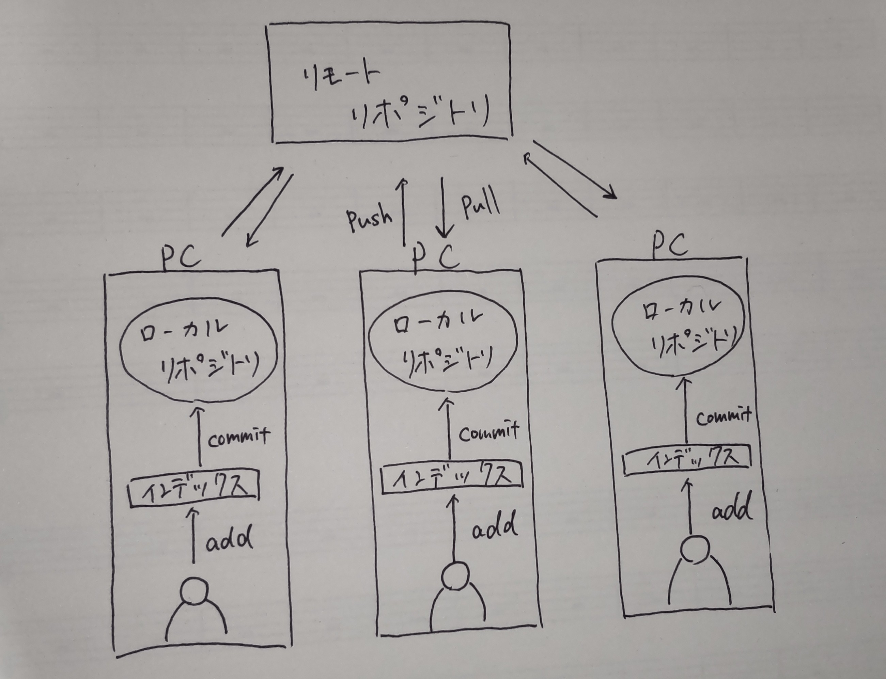

ファイルのバージョン管理（履歴管理）が簡単にできるツール
gitの導入によって、
誰が、どのファイルに、何を書き込んだのか、何を削除して、変更前はどういう状態だったのかを 保存し管理できるようになる。
また必要であれば、前バージョンまで戻ることが可能。
gitの導入によって、
誰が、どのファイルに、何を書き込んだのか、何を削除して、変更前はどういう状態だったのかを 保存し管理できるようになる。
また必要であれば、前バージョンまで戻ることが可能。
- 前のバージョンにファイルを戻せる
- 同じファイルを複数の人で編集できて、それを統合できる（上書きにならない）
- 履歴を共有できる
gitの特徴

add:ファイルを編集したことをインデックスに登録する作業（履歴を残す前準備）
commi:addを行った後に、自分ローカルリポジトリに作業内容の履歴を保存する作業のこと。内容・日時・作業者を記録したファイルが生成されて保存される
pull:他の人の作業した履歴を自分のローカルリポジトリのファイルに繁栄される作業。
push:自分のローカルリポジトリにあるファイルをリモートリポジトリにアップして保存する作業。
リポジトリ:ファイルや履歴を保存するための保存庫
リモートリポジトリ:webサーバーにおかれており、共有で使用する。
ローカルリポジトリ:各PCの中におかれており、各ユーザーごとに使用する。
2⃣HTMLとは？？
Webページの記述言語。
HTMLのルールにしたがって記述されたテキストファイルをHTMLドキュメントと呼び、
これをブラウザが読み込むことでWebページを表示できる。
正式名称は”HyperText Markup Langage"
HTMLを構成する3つの用語
1,Web上での表現方法を決める「タグ」
HTMLファイルに記述したテキストデータなどに対して、Web上でどのように表現するかを定義する。＜＞で始まり（開始タグ）＜/＞で終わる（終了タグ）
2,Web上で実際に表示される「要素」
開始タグと終了タグに囲まれたテキストタグでか米れた要素の内容が、Webに表示される。
3,タグの性質を決める「属性」
タグの種類によって様々な属性が存在する。また、属性が使われた場合は終了タグがいらない。
タグと要素のイメージ図

属性のイメージ図

参考文献 HTMLとは？HTMLの基本を分かりやすく解説！
HTMLとは？できることや基本のタグを初心者向けにわかりやすく解説